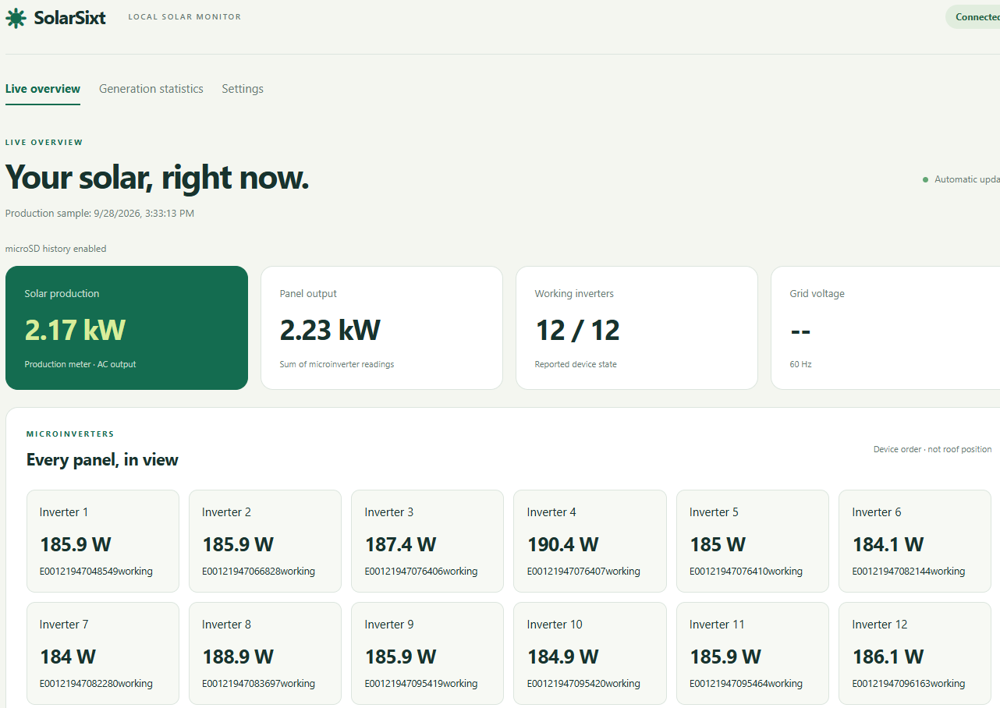
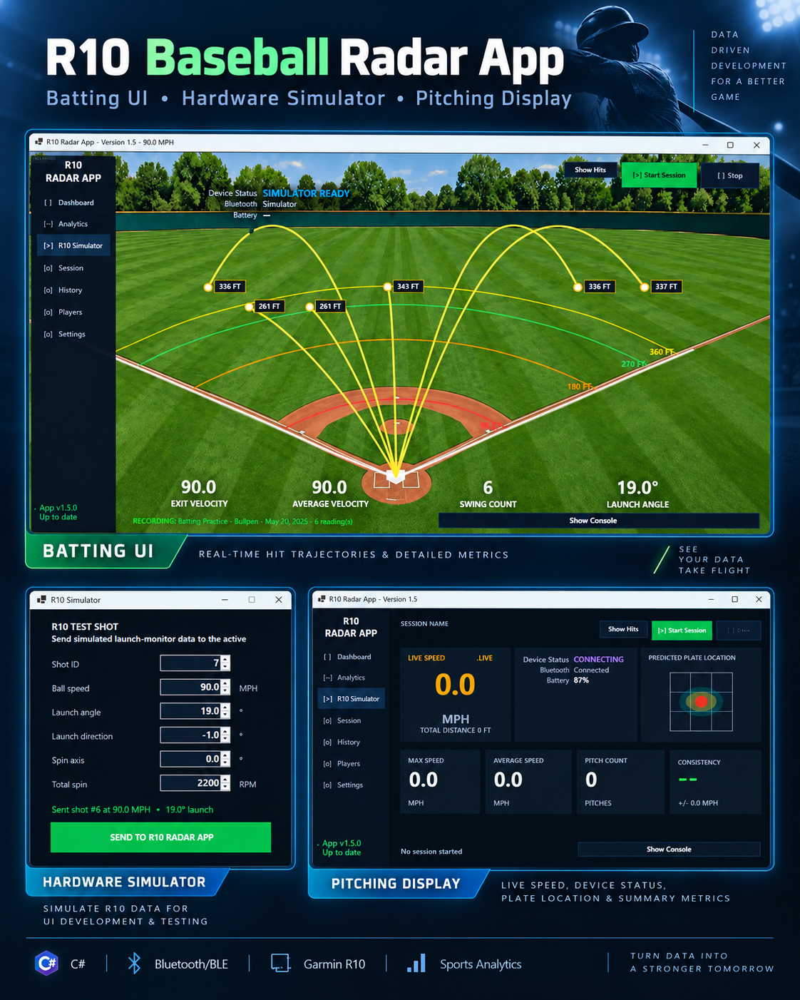

SolarSixt Apps
SolarSixt Apps reflects my hands-on work migrating applications across hardware platforms: first running on a PC, then moving to a Raspberry Pi, and most recently to the ESP32-Eth.
The project traces a progression from desktop computing to a single-board computer and then to an Ethernet-enabled microcontroller, adapting the software to each platform along the way.
Platform migration: PC → Raspberry Pi → ESP32-Eth.

R10 Baseball Radar App
A baseball analytics project I built with my son to explore repurposing the Garmin Approach R10 golf launch monitor for hitting and pitching. Written in C# and .NET for Windows, the application connects to the R10 over Bluetooth and presents launch monitor data through a baseball-focused interface.
Current development focuses on hitting: exit velocity, launch angle and direction, estimated hit distance, trajectory visualization, and swing tracking. Player and session management, average and maximum velocity metrics, historical performance trends, and pitch velocity tracking round out the current capabilities.
I also built an R10 hardware simulator to generate representative ball speed, launch angle, direction, and spin data, making it faster and more repeatable to test calculations, analytics, and session workflows. The project has been an opportunity to explore AI-assisted development with GitHub Copilot and Codex in ChatGPT.
Technologies: C#, .NET, Bluetooth/BLE, Garmin R10, hardware simulation, and sports data visualization.
Download the Windows installer (v1.5.0, 64-bit)
Career Knowledge Copilot
Career Knowledge Copilot is an AI-assisted application for exploring career knowledge, organizing professional experience, and developing thoughtful career decisions. It helps connect questions, experience, skills, and opportunities so that career planning can be more informed and intentional.
The application brings together structured career information and conversational guidance in one place, making it easier to reflect on professional goals and identify useful next steps.
LEGO BrickLink Manifest
LEGO BrickLink Manifest is a practical tool for organizing LEGO sets and preparing BrickLink inventory information. It helps streamline the process of working with LEGO parts and manifests for collection, inventory, and project management.